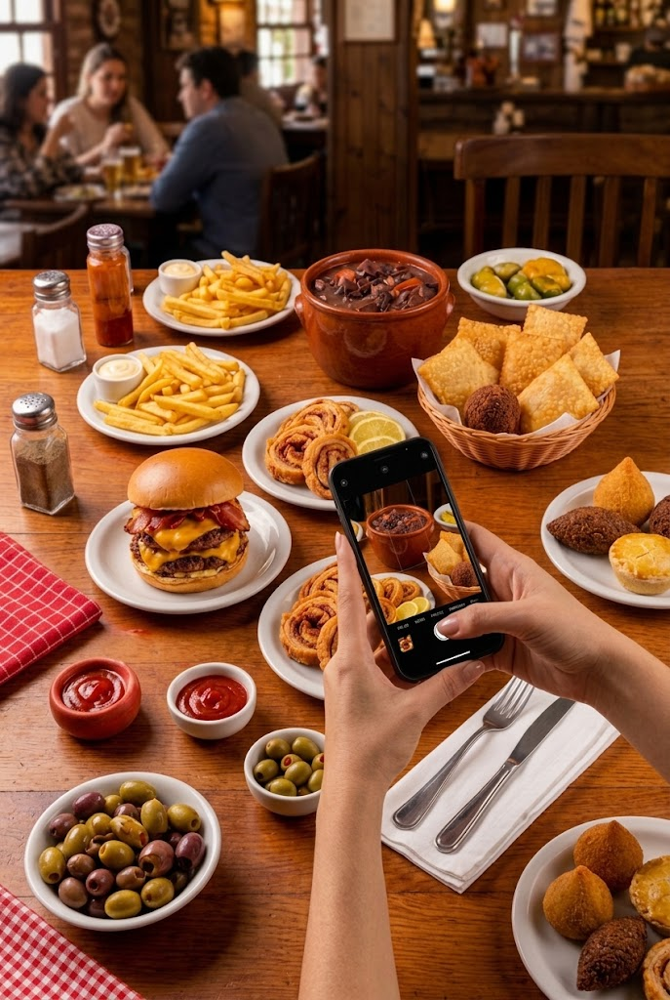

SABOR QUE TE FAZ
CALAR A BOCA.
AQUI, A COMIDA É PRA COMER DE VERDADE!
Sem frescura, só sabor. Descubra os nossos pratos e delivery.
OS MAIS PEDIDOS

NOSSA HISTÓRIA
Desde 2024, a gente cansou da gourmetização e da comida de porção pequena. Acreditamos no sabor raiz, sem frescura e de verdade. Nascemos pra servir comida com sustança: o pastel bem recheado, a feijoada com sabor de casa e o hambúrguer suculento que faz a mesa parar pra comer. Aqui a regra é simples: prato cheio, copo gelado e receita feita pra dar água na boca. Puxe a cadeira, peça o seu e bom apetite. Afinal... a boca foi feita pra comer!